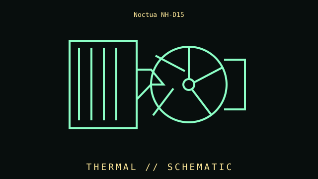

[ INDIVIDUAL COMPONENT // COOLING ]
Noctua NH-D15
Dual-tower air CPU cooler, 2014. This record describes this specific product, standard, or clearly identified family; it is not a claim that every product sold under a similar name shares these specifications.

IDENTIFICATION WARNING: Match the complete model/part number and revision to its label and manual. Family-level entries may cover revisions; values marked “common” are not guaranteed for every unit.
Specifications
| Catalog subcategory | Air CPU coolers |
|---|---|
| Catalog identity | Noctua NH-D15 |
| Era / family | Dual-tower air CPU cooler, 2014 |
| Key specifications | Two 140 mm NF-A15 PWM fans; six heatpipes; 165 mm nominal height; dual-tower heatsink |
| Interfaces / mechanical | Socket kit, case height, RAM clearance, and graphics-card slot placement must be checked for exact revision |
| Compatibility and variants | NH-D15S and later revisions differ in offset, accessories, and supported sockets. |
| Use / service note | Inspect condition, revision markings, firmware or configuration, connectors, and any prior repair. For preservation, record photographs of labels and board markings before cleaning or disassembly. |
Identification & compatibility checks
- Photograph manufacturer, full model number, revision, serial/date codes, connector faces, and included brackets or cables before installation.
- Confirm electrical interface, connector pinout, physical dimensions, power requirements, firmware/driver support, and the host device’s documented compatibility.
- Do not infer compatibility from a shared brand, socket silhouette, connector shape, or marketing family name. Revisions and regional SKUs may differ.
- When a unit’s identity is uncertain, compare component markings against the manufacturer manual and avoid applying power until the pinout and condition are known.
Context & archival notes
NH-D15S and later revisions differ in offset, accessories, and supported sockets.
Useful collection fields: exact model and revision; manufacture date; board/assembly identifiers; firmware; accessories; condition; known faults; source of acquisition; and the document revision used to verify this entry. Any measured result should include test setup and method.
Sources & further reading
- Noctua — Cooler compatibility centrePrimary or standards reference for this component family; confirm the full model number and revision.
- Intel — Processor support and thermal guidancePrimary or standards reference for this component family; confirm the full model number and revision.
Source notes point to standards bodies, manufacturers, or archival records. Some sources cover a family rather than this exact revision; the manufacturer datasheet/manual for the full part number takes precedence.